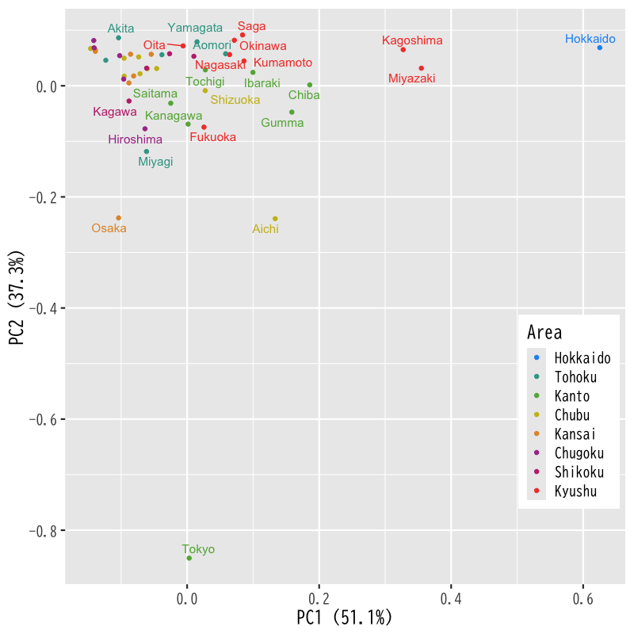
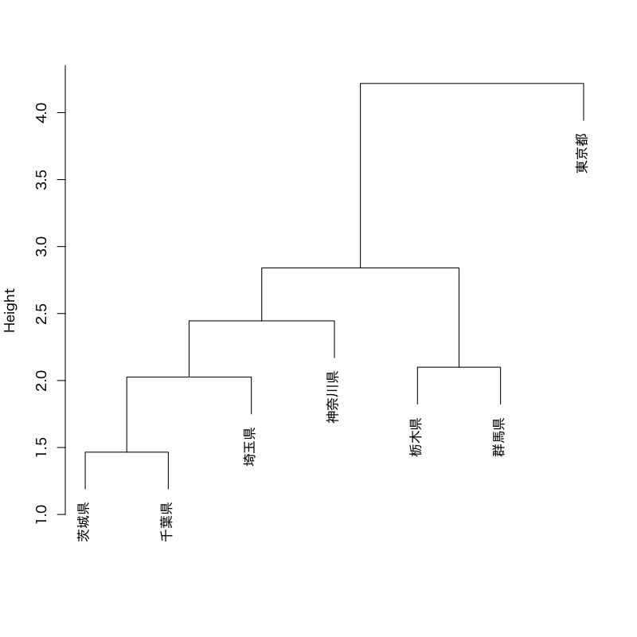

クラスタ分析
基本的な考え方と階層的方法
(Press ? for help, n and p for next and previous slide)
今週の内容
- 第1日: クラスタ分析の考え方と階層的方法
- 第2日: 非階層的方法と分析の評価
クラスタ分析の考え方
クラスタ分析
cluster analysis
個体の間に隠れている 集まり=クラスタ を個体間の“距離”にもとづいて発見する方法
- 個体間の類似度・距離(非類似度)を定義:
- 同じクラスタに属する個体どうしは似通った性質
- 異なるクラスタに属する個体どうしは異なる性質
- さらなるデータ解析やデータの可視化に利用
- 教師なし学習の代表的な手法の一つ
クラスタ分析の考え方
- 階層的方法:
- データ点およびクラスタの間に 距離 を定義
- 距離に基づいてグループ化:
- 近いものから順にクラスタを 凝集
- 近いものが同じクラスタに残るように 分割
- 非階層的方法:
- クラスタの数を事前に指定
- クラスタの 集まりの良さ を評価する損失関数を定義
- 損失関数を最小化するようにクラスタを形成
事例
- 総務省統計局より取得した都道府県別の社会生活統計指標の一部
- 総務省 https://www.e-stat.go.jp/SG1/estat/List.do?bid=000001083999&cycode=0
データ https://noboru-murata.github.io/multivariate-analysis/data/japan_social.csv
- Pref: 都道府県名
- Forest: 森林面積割合 (%) 2014年
- Agri: 就業者１人当たり農業産出額(販売農家）(万円) 2014年
- Ratio: 全国総人口に占める人口割合 (%) 2015年
- Land: 土地生産性（耕地面積１ヘクタール当たり）(万円) 2014年
- Goods: 商業年間商品販売額［卸売業＋小売業］（事業所当たり）(百万円) 2013年
データの内容
Forest Agri Ratio Land Goods Hokkaido 67.9 1150.6 4.23 96.8 283.3 Aomori 63.8 444.7 1.03 186.0 183.0 Iwate 74.9 334.3 1.01 155.2 179.4 Miyagi 55.9 299.9 1.84 125.3 365.9 Akita 70.5 268.7 0.81 98.5 153.3 Yamagata 68.7 396.3 0.88 174.1 157.5 Fukushima 67.9 236.4 1.51 127.1 184.5 Ibaraki 31.0 479.0 2.30 249.1 204.9 Tochigi 53.2 402.6 1.55 199.6 204.3 Gumma 63.8 530.6 1.55 321.6 270.0 Saitama 31.9 324.7 5.72 247.0 244.7 Chiba 30.4 565.5 4.90 326.1 219.7 Tokyo 34.8 268.5 10.63 404.7 1062.6 Kanagawa 38.8 322.8 7.18 396.4 246.1 Niigata 63.5 308.6 1.81 141.9 205.5 Toyama 56.6 276.1 0.84 98.5 192.4 Ishikawa 66.0 271.3 0.91 112.0 222.9 Fukui 73.9 216.1 0.62 98.5 167.3 Yamanashi 77.8 287.4 0.66 325.3 156.2 Nagano 75.5 280.0 1.65 211.3 194.4 Gifu 79.0 283.7 1.60 192.1 167.9 Shizuoka 63.1 375.8 2.91 314.5 211.4 Aichi 42.2 472.3 5.89 388.9 446.9 Mie 64.3 310.6 1.43 174.3 170.1 Shiga 50.5 222.8 1.11 104.9 170.7 Kyoto 74.2 267.8 2.05 212.5 196.7 Osaka 30.1 216.3 6.96 238.8 451.2 Hyogo 66.7 261.2 4.35 197.7 212.5 Nara 76.8 207.0 1.07 182.7 147.0 Wakayama 76.4 251.1 0.76 278.4 136.4 Tottori 73.3 249.9 0.45 187.6 162.2 Shimane 77.5 214.1 0.55 140.8 141.1 Okayama 68.0 254.8 1.51 184.9 207.8 Hiroshima 71.8 286.2 2.24 192.2 304.6 Yamaguchi 71.6 216.9 1.11 125.8 158.9 Tokushima 75.2 315.4 0.59 313.5 134.5 Kagawa 46.4 249.5 0.77 242.9 232.9 Ehime 70.3 288.5 1.09 231.6 179.4 Kochi 83.3 354.2 0.57 339.9 137.9 Fukuoka 44.5 381.0 4.01 255.6 295.7 Saga 45.2 468.7 0.66 230.3 137.9 Nagasaki 58.4 428.9 1.08 296.0 154.0 Kumamoto 60.4 456.6 1.41 285.5 172.5 Oita 70.7 360.1 0.92 222.8 148.3 Miyazaki 75.8 739.1 0.87 487.7 170.6 Kagoshima 63.4 736.5 1.30 351.2 169.4 Okinawa 46.1 452.4 1.13 232.8 145.4

Figure 1: データの散布図

Figure 2: 主成分得点の散布図

Figure 3: 散布図上のクラスタ構造 (クラスタ分析の概念図)
階層的クラスタリング
凝集的方法の手続き
- データ・クラスタ間の距離を定義する
- データ点とデータ点の距離
- クラスタとクラスタの距離
- データ点およびクラスタ間の距離を求める
- 最も近い2つを統合し新たなクラスタを形成する
- データ点とデータ点
- データ点とクラスタ
- クラスタとクラスタ
- クラスタ数が1つになるまで2-3の手続きを繰り返す
事例
社会生活統計指標の一部(関東)での例

Figure 4: 凝集的方法

Figure 5: クラスタリングの手続き (その1)

Figure 6: クラスタリングの手続き (その2)

Figure 7: クラスタリングの手続き (その3)

Figure 8: クラスタリングの手続き (その4)

Figure 9: クラスタリングの手続き (その5)

Figure 10: クラスタリングの手続き (その6)

Figure 11: デンドログラムによるクラスタ構造の表示
データ間の距離
データ間の距離
データ: 変数の値を成分としてもつベクトル
\begin{equation} \boldsymbol{x}_{i}=(x_{i1},\dotsc,x_{ip})^{\mathsf{T}}, \boldsymbol{x}_{j}=(x_{j1},\dotsc,x_{jp})^{\mathsf{T}}\in\mathbb{R}^p \end{equation}- 距離: \(d(\boldsymbol{x}_{i},\boldsymbol{x}_{j})\)
- 代表的なデータ間の距離:
- ユークリッド距離 (Euclidean distance)
- マンハッタン距離 (Manhattan distance)
- ミンコフスキー距離 (Minkowski distance)
ユークリッド距離
- 最も一般的な距離
各成分の差の2乗和の平方根 (2ノルム)
\begin{equation*} d(\boldsymbol{x}_{i},\boldsymbol{x}_{j}) =\sqrt{(x_{i1}-x_{j1})^{2}+\dotsb+(x_{ip}-x_{jp})^{2}} \end{equation*}
マンハッタン距離
- 後述するミンコフスキー距離の \(q=1\) の場合
格子状に引かれた路に沿って移動するときの距離
\begin{equation*} d(\boldsymbol{x}_{i},\boldsymbol{x}_{j}) =|x_{i1}-x_{j1}|+\dotsb+|x_{ip}-x_{jp}| \end{equation*}
ミンコフスキー距離
- ユークリッド距離を \(q\) 乗に一般化した距離
各成分の差の \(q\) 乗和の \(q\) 乗根(\(q\) ノルム)
\begin{equation*} d(\boldsymbol{x}_{i},\boldsymbol{x}_{j}) =\bigl\{|x_{i1}-x_{j1}|^{q}+\dotsb+|x_{ip}-x_{jp}|^{q}\bigr\}^{1/q} \end{equation*}
その他の距離
- 類似度や乖離度などデータ間に自然に定義されるものを用いることは可能
- 語句の共起 (同一文書に現れる頻度・確率)
- 会社間の取引量 (売上高などで正規化が必要)
- 擬似的な距離でもアルゴリズムは動く
演習
問題
- 以下の問に答えなさい．
- 距離の定義を述べなさい
ミンコフスキー距離において \(q\to\infty\) とするとどのような距離となるか答えなさい
\begin{equation*} d(\boldsymbol{x}_{i},\boldsymbol{x}_{j}) =\bigl\{|x_{i1}-x_{j1}|^{q}+\dotsb+|x_{ip}-x_{jp}|^{q}\bigr\}^{1/q} \end{equation*}
解答例
2変数の実数値関数で以下の3つの条件を満たす
非退化性
\begin{equation} x=y \Leftrightarrow d(x,y)=0 \end{equation}対称性
\begin{equation} d(x,y)=d(y,x) \end{equation}劣加法性 (三角不等式の成立)
\begin{equation} d(x,y)+d(y,z)\ge d(x,z) \end{equation}
非負性 \(d(x,y)\ge 0\) は3つの条件から自然に導かれる
\begin{align} &d(x,y)+d(y,x)\ge d(x,x)&&\text{(劣加法性)}\\ &d(x,y)+d(x,y)\ge d(x,x)&&\text{(対称性)}\\ &2d(x,y)\ge 0&&\text{(非退化性)}\\ &d(x,y)\ge 0 \end{align}
最大の要素に着目して計算すればよい
\begin{align} \lim_{q\to\infty} d(\boldsymbol{x}_{i},\boldsymbol{x}_{j}) &= \lim_{q\to\infty} \bigl\{|x_{i1}-x_{j1}|^{q}+\dotsb+|x_{ip}-x_{jp}|^{q}\bigr\}^{1/q}\\ &= \lim_{q\to\infty} \max_{r}|x_{ir}-x_{jr}| \left\{ \left(\frac{|x_{i1}-x_{j1}|}{\max_{r}|x_{ir}-x_{jr}|} \right)^{q} \right.\\ &\qquad +\dotsb \left. \left(\frac{|x_{ip}-x_{jp}|}{\max_{r}|x_{ir}-x_{jr}|} \right)^{q} \right\}^{1/q}\\ &= \max_{r}|x_{ir}-x_{jr}| \lim_{q\to\infty} \text{(1以上の有限値)}^{1/q}\\ &= \max_{r}|x_{ir}-x_{jr}| \end{align}チェビシェフ距離(最大距離，チェス盤距離)という
\(q\to-\infty\) の場合は以下となることを確認せよ
\begin{equation} \lim_{q\to-\infty} d(\boldsymbol{x}_{i},\boldsymbol{x}_{j}) =\min_{r}|x_{ir}-x_{jr}| \end{equation}
クラスタ間の距離
クラスタ間の距離
クラスタ: いくつかのデータ点からなる集合
\begin{equation*} C_{a}=\left\{\boldsymbol{x}_{i}|i\in\Lambda_{a}\right\},\quad C_{b}=\left\{\boldsymbol{x}_{j}|j\in\Lambda_{b}\right\} \end{equation*}- 2つのクラスタ間の距離: \(D(C_{a},C_{b})\)
- データ点の距離から陽に定義する方法
- クラスタの統合にもとづき再帰的に定義する方法
- 代表的なクラスタ間の距離
- 最短距離法 (単連結法; single linkage method)
- 最長距離法 (完全連結法; complete linkage method)
- 群平均法 (average linkage method)
最短距離法
最も近い対象間の距離を用いる方法:
\begin{equation} D(C_{a},C_{b}) =\min_{\boldsymbol{x}_{i}\in C_{a},\;\boldsymbol{x}_{j}\in C_{b}} d(\boldsymbol{x}_{i},\boldsymbol{x}_{j}) \end{equation}統合前後のクラスタ間の関係:
\begin{equation} D(C_{a}+ C_{b}, C_{c}) =\min\bigl\{D(C_{a},C_{c}), D(C_{b},C_{c})\bigr\} % =\min\left\{D(C_{a},C_{c}), D(C_{b},C_{c})\right\} \end{equation}
最長距離法
最も遠い対象間の距離を用いる方法:
\begin{equation} D(C_{a},C_{b}) =\max_{\boldsymbol{x}_{i}\in C_{a},\;\boldsymbol{x}_{j}\in C_{b}} d(\boldsymbol{x}_{i},\boldsymbol{x}_{j}) \end{equation}統合前後のクラスタ間の関係:
\begin{equation} D(C_{a}+ C_{b}, C_{c}) =\max\bigl\{D(C_{a},C_{c}), D(C_{b},C_{c})\bigr\} % =\max\left\{D(C_{a},C_{c}), D(C_{b},C_{c})\right\} \end{equation}
群平均法
全ての対象間の平均距離を用いる方法:
\begin{equation} D(C_{a},C_{b}) =\frac{1}{|C_{a}||C_{b}|} \sum_{\boldsymbol{x}_{i}\in C_{a},\;\boldsymbol{x}_{j}\in C_{b}} d(\boldsymbol{x}_{i},\boldsymbol{x}_{j}) \end{equation}ただし \(|C_{a}|\), \(|C_{b}|\) はクラスタ内の要素の数を表す
統合前後のクラスタ間の関係:
\begin{equation} D(C_{a}+ C_{b}, C_{c}) =\frac{|C_{a}|D(C_{a},C_{c})+|C_{b}|D(C_{b},C_{c})}{|C_{a}|+|C_{b}|} \end{equation}
距離計算に関する注意
- データの性質に応じて距離は適宜使い分ける
- データ間の距離の選択
- クラスタ間の距離の選択
- 変数の正規化は必要に応じて行う
- 物理的な意味合いを積極的に利用する場合はそのまま
- 単位の取り方などによる分析の不確定性を避ける場合は平均0，分散1に正規化
- データの性質を鑑みて適切に前処理
演習
問題
- 以下の問に答えなさい
群平均法におけるクラスタの距離の定義
\begin{equation} D(C_{a},C_{b}) =\frac{1}{|C_{a}||C_{b}|} \sum_{\boldsymbol{x}_{i}\in C_{a},\;\boldsymbol{x}_{j}\in C_{b}} d(\boldsymbol{x}_{i},\boldsymbol{x}_{j}) \end{equation}から統合前後のクラスタの距離の関係
\begin{equation} D(C_{a}+ C_{b}, C_{c}) =\frac{|C_{a}|D(C_{a},C_{c})+|C_{b}|D(C_{b},C_{c})}{|C_{a}|+|C_{b}|} \end{equation}を導け
解答例
定義に従って計算する
\begin{align} D(C_{a}+C_{b}, C_{c}) &= \frac{1}{|C_{a}+C_{b}||C_{c}|} \sum_{\boldsymbol{x}_{i}\in C_{a}+C_{b},\;\boldsymbol{x}_{j}\in C_{c}} d(\boldsymbol{x}_{i},\boldsymbol{x}_{j})\\ &= \frac{1}{|C_{a}+C_{b}||C_{c}|} \sum_{\boldsymbol{x}_{i}\in C_{a},\;\boldsymbol{x}_{j}\in C_{c}} d(\boldsymbol{x}_{i},\boldsymbol{x}_{j})\\ &\qquad+ \frac{1}{|C_{a}+C_{b}||C_{c}|} \sum_{\boldsymbol{x}_{i}\in C_{b},\;\boldsymbol{x}_{j}\in C_{c}} d(\boldsymbol{x}_{i},\boldsymbol{x}_{j})\\ \end{align}
- (続き)
\begin{align} &= \frac{|C_{a}||C_{c}|}{|C_{a}+C_{b}||C_{c}|} \frac{1}{|C_{a}||C_{c}|} \sum_{\boldsymbol{x}_{i}\in C_{a},\;\boldsymbol{x}_{j}\in C_{c}} d(\boldsymbol{x}_{i},\boldsymbol{x}_{j})\\ &\qquad+ \frac{|C_{b}||C_{c}|}{|C_{a}+C_{b}||C_{c}|} \frac{1}{|C_{b}||C_{c}|} \sum_{\boldsymbol{x}_{i}\in C_{b},\;\boldsymbol{x}_{j}\in C_{c}} d(\boldsymbol{x}_{i},\boldsymbol{x}_{j})\\ &= \frac{|C_{a}||C_{c}|}{|C_{a}+C_{b}||C_{c}|} D(C_{a}, C_{c}) + \frac{|C_{b}||C_{c}|}{|C_{a}+C_{b}||C_{c}|} D(C_{b}, C_{c})\\ &= \frac{|C_{a}|D(C_{a}, C_{c})+|C_{b}|D(C_{b}, C_{c})} {|C_{a}|+|C_{b}|} \end{align}
解析事例
都道府県別の社会生活統計指標
各データを正規化
- Forest: 森林面積割合 (%) 2014年
- Agri: 就業者１人当たり農業産出額(販売農家）(万円) 2014年
- Ratio: 全国総人口に占める人口割合 (%) 2015年
- Land: 土地生産性（耕地面積１ヘクタール当たり）(万円) 2014年
- Goods: 商業年間商品販売額［卸売業＋小売業］（事業所当たり）(百万円) 2013年
- ユークリッド距離 + 群平均法
Figure 12: 社会生活統計指標のクラスタ分析 (デンドログラム)

Figure 13: クラスタの分割
5クラスタに分割
<<cluster 1 >> [1] "Hokkaido" <<cluster 2 >> [1] "Aomori" "Iwate" "Miyagi" "Akita" "Yamagata" "Fukushima" [7] "Ibaraki" "Tochigi" "Gumma" "Niigata" "Toyama" "Ishikawa" [13] "Fukui" "Yamanashi" "Nagano" "Gifu" "Shizuoka" "Mie" [19] "Shiga" "Kyoto" "Hyogo" "Nara" "Wakayama" "Tottori" [25] "Shimane" "Okayama" "Hiroshima" "Yamaguchi" "Tokushima" "Kagawa" [31] "Ehime" "Kochi" "Saga" "Nagasaki" "Kumamoto" "Oita" [37] "Okinawa" <<cluster 3 >> [1] "Saitama" "Chiba" "Kanagawa" "Aichi" "Osaka" "Fukuoka" <<cluster 4 >> [1] "Tokyo" <<cluster 5 >> [1] "Miyazaki" "Kagoshima"
都道府県別好きなおむすびの具
- Webアンケート
- 「ごはんを食べよう国民運動推進協議会」(平成30年解散)
(閉鎖) http://www.gohan.gr.jp/result/09/anketo09.html - データ https://noboru-murata.github.io/multivariate-analysis/data/omusubi.csv
- 「ごはんを食べよう国民運動推進協議会」(平成30年解散)
アンケート概要
【応募期間】 2009年1月4日～2009年2月28日 【応募方法】 インターネット、携帯ウェブ 【内 容】 Q1. おむすびを最近１週間に、何個食べましたか？ そのうち市販のおむすびは何個でしたか？ Q2. おむすびの具では何が一番好きですか？ A.梅 B.鮭 C.昆布 D.かつお E.明太子 F.たらこ Ｇ.ツナ H.その他 Q3. おむすびのことをあなたはなんと呼んでいますか？ A.おにぎり B.おむすび C.その他 Q4. おむすびといえば、どういう形ですか？ A.三角形 B.丸形 C.俵形 D.その他 【回答者数】 男性 9,702人 32.0% 女性 20,616人 68.0% 総数 30,318人 100.0%- Q2の結果を利用
データの内容
ume shake kobu katsuo mentai tarako tuna etc hokkaido 13.86 27.94 5.58 5.26 9.26 15.06 11.61 11.39 aomori 14.93 30.79 7.01 2.43 10.36 11.58 11.58 11.28 iwate 17.91 23.13 5.22 3.35 17.91 10.07 10.44 11.94 miyagi 15.16 29.50 10.00 1.66 14.83 8.83 12.83 7.16 akita 10.63 31.38 5.31 3.19 14.89 13.29 10.63 10.63 yamagata 16.58 20.27 8.29 1.38 18.89 10.13 12.90 11.52 fukushima 12.37 21.99 8.93 3.43 16.49 9.62 19.24 7.90 ibaraki 15.42 26.49 7.98 2.54 18.33 11.79 11.79 5.62 tochigi 16.61 27.04 10.70 1.97 16.90 9.29 12.67 4.78 gunma 14.24 22.53 6.21 1.81 20.20 15.28 13.73 5.95 saitama 13.91 27.17 8.03 3.57 19.36 10.17 13.58 4.18 chiba 14.96 28.49 7.10 3.67 19.07 10.53 10.97 5.17 tokyo 14.07 28.03 8.28 3.28 17.80 11.74 11.20 5.56 kanagawa 15.05 28.06 9.61 3.47 16.10 10.67 11.49 5.51 niigata 21.06 23.03 3.37 1.12 19.66 15.16 7.02 9.55 toyama 19.41 21.84 14.56 4.85 13.59 7.76 11.16 6.79 ishikawa 23.05 20.00 19.66 4.06 13.89 7.11 10.16 2.03 fukui 20.58 20.58 18.62 4.90 15.68 6.86 9.80 2.94 yamanashi 14.11 20.58 9.41 2.35 20.58 12.35 18.23 2.35 nagano 18.64 21.30 9.68 2.66 20.33 13.80 10.16 3.38 gifu 16.52 20.55 11.44 4.44 15.88 8.68 15.46 6.99 shizuoka 15.96 27.71 11.86 4.98 14.30 9.20 10.75 5.21 aichi 15.38 27.62 10.87 3.10 14.77 8.23 13.64 6.35 mie 13.51 29.50 11.26 5.18 14.63 7.88 10.58 7.43 shiga 14.96 23.12 12.92 6.12 18.70 7.14 12.24 4.76 kyoto 18.99 26.62 12.66 5.68 15.09 8.44 8.92 3.57 osaka 17.19 25.33 13.71 6.87 14.54 8.22 10.49 3.61 hyogo 17.93 23.82 13.85 5.74 15.23 7.34 12.04 4.01 nara 16.45 24.83 11.61 8.38 14.83 9.35 10.64 3.87 wakayama 16.22 20.61 15.78 7.89 12.28 9.21 14.47 3.50 tottori 18.64 16.10 10.16 2.54 22.03 11.86 13.55 5.08 shimane 20.33 18.64 15.25 6.77 15.25 6.77 12.71 4.23 okayama 17.30 18.20 12.80 4.49 18.20 9.43 14.38 5.16 hiroshima 22.03 21.12 17.17 6.38 17.17 6.23 7.44 2.43 yamaguchi 22.22 17.20 16.84 2.86 20.07 5.37 9.67 5.73 tokushima 22.06 20.68 17.24 7.58 13.79 5.51 11.03 2.06 kagawa 17.75 22.42 12.61 4.67 13.08 8.41 14.95 6.07 ehime 21.72 25.29 11.60 5.95 15.17 5.95 12.50 1.78 kochi 11.72 33.79 17.93 3.44 9.65 10.34 9.65 3.44 fukuoka 15.62 22.59 11.73 4.94 22.77 5.11 11.65 5.56 saga 17.98 19.42 5.75 3.59 12.94 9.35 23.74 7.19 nagasaki 23.36 22.13 11.88 7.78 16.39 3.68 8.60 6.14 kumamoto 21.57 14.72 13.69 7.19 19.52 4.79 12.67 5.82 oita 14.00 27.53 11.11 4.83 20.77 3.38 9.66 8.69 miyazaki 20.88 22.15 10.75 3.79 18.35 11.39 7.59 5.06 kagoshima 17.59 24.53 9.25 4.16 19.44 6.01 14.81 4.16 okinawa 19.59 22.85 7.34 2.04 15.10 4.48 11.42 17.14

Figure 14: データの散布図

Figure 15: 県別の人気比率

Figure 16: 県別の人気比率
次週の予定
- 第1日: クラスタ分析の考え方と階層的方法
- 第2日: 非階層的方法と分析の評価